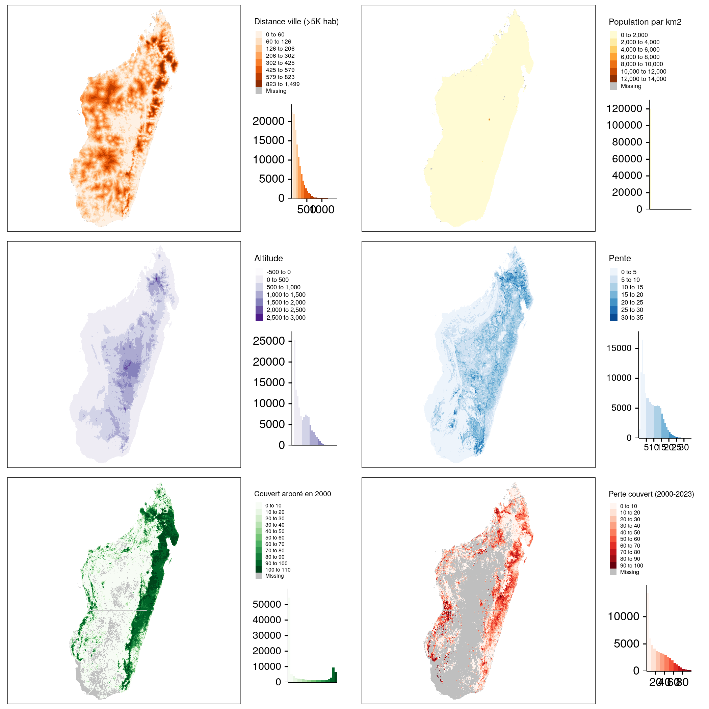
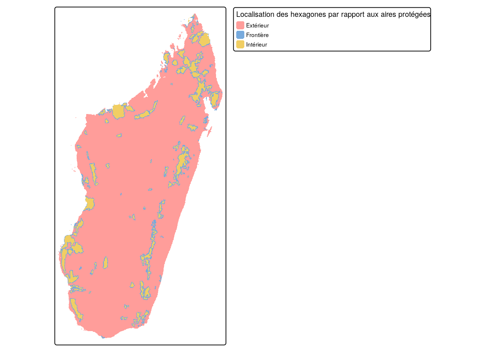

On souhaite définir une stratégie empirique pour évaluer une politique publique avec des méthodes quantitatives, trois choix principaux doivent être définis :
Quel types d’unités allons-nous comparer ? (Quelles lignes dans mon tableau ?)
Quelles variables prendre en compte ? (Quelles colonnes dans mon tableau ?)
Comment constituer une comparaison crédible ? (Quelle méthode d’analyse et quelles spécifications ?)
On se focalise souvent sur les questions 2. et 3, mais la question 1. est souvent considérée comme évidente. Cette question 1. suscite pourtant beaucoup de confusion quand on apprend l’économétrie.
Nous allons illuster cette question avec le cas de la conservation. Typiquement, les évaluations de l’impact des politiques de conservation prennent habituellement comme référence (comme ligne du tableau) :
Des pays, pour voir comment la présence d’aires protégées à l’échelle nationale influence la distribution d’autres variables également à l’échelle nationale
Des unités administratives, comme des communes
Des zones géographiques d’une échelle assez fine (par exemple, 1 km2), cf. par exemple Wolf et al. (Wolf et al. 2021)
Des pixels à l’échelle la plus fine où ils sont disponible, généralement en effectuant un tirage alétaoire, cf. par exemple Devenish et al. (2022)
Une approche courante consiste à diviser le territoires en mailles, carrées ou en forme d’alvéoles d’abeilles (hexagones), et à calculer des indicateurs pour chacune de ces mailles.
7.2 Constitution d’un maillage
On montre ci-dessous comment cette approche fonctionne. La première étape consiste à dessiner un carré autour des aires protégées malgaches, puis à subdiviser ce grand carré en un damier de formes hexagonales. Enfin, on ne garde que les hexagones qui se trouvent dans les frontières terrestres de Madagascar.
Code
library(tidyverse)library(tmap)library(sf)library(mapme.biodiversity)library(geodata)library(terra)library(future)library(tictoc)library(progressr)contour_mada <-gadm(country ="Madagascar", resolution =1, level =0,path ="data") %>%st_as_sf() %>%st_transform("EPSG:29739") # On utilise la projecton officielle pour Mada# Création d'un maillage du territoire émergé --------------------------------# On crée un cadre autour des frontières nationalescadre_autour_mada =st_as_sf(st_as_sfc(st_bbox(contour_mada))) %>%st_make_valid()# Surface des hexagones en km2taille_hex <-5# Cellules de 5km de rayonsurface_cellule <- taille_hex * (1e+6)taille_cellule <-2*sqrt(surface_cellule / ((3*sqrt(3) /2))) *sqrt(3) /2grille_mada <-st_make_grid(x = cadre_autour_mada,cellsize = taille_cellule,square =FALSE) # On découpe la grille pour ne garder que les terres émergéescellules_emergees <- contour_mada %>%st_intersects(grille_mada) %>%unlist()grille_mada <- grille_mada[sort(cellules_emergees)] %>%st_sf()
Le maillage produit est trop fin pour être visible à l’échelle du pays, mais on peut l’observer en zoomant sur une zone spécifique.
Code
## Carte de droite : zoom sur une zone spécifique-----------------------------# On crée une boîte de 100km autour de Maroantsetrazoom_boite <-st_point(c(49.74229,-15.43487)) %>%# Coordonnées de Maroantsetrast_sfc(crs ="EPSG:4326") %>%# On précise que c'est du GPS initalementst_transform(crs ="EPSG:29739") %>%# On passe en projetést_buffer(dist =50000) %>%# On crée un cercle de 50km de rayonst_make_grid(n =1) # On filtre les alvéoles pour ne garder que celles qui sont dans le zoomgrille_zoom <-st_intersection(grille_mada, zoom_boite)tmap_mode("view")# On génère la carte de droitetm_shape(grille_zoom) +tm_borders() +tm_basemap("OpenStreetMap")
7.3 Récupération des données pour le maillage
On va ensuite utiliser le package mapme.biodiversity pour calculer, pour chaque hexagones, une série d’indicateurs : temps de parcours jusqu’à la ville (définie comme toute localité de 5000 habitants) la plus proche en 2015, teneur du sol en argile et couvert forestier par année).
 Les cartes et histogrammes ci-dessus illustrent la distribution des variables spatiales calculées par hexagones.
7.4 Croisement des données d’aires protégées et satellitaires
On peut maintenant associer les données d’aires protégées aux hexagones afin de les croiser avec les indicateurs issus des données satellitaires déjà calculés pour ces hexagones.
Code
if (file.exists("data/grille_mada_summary_AP.rds")) { grille_mada_AP <-read_rds("data/grille_mada_summary_AP.rds")} else {# Load the protected areas data AP_Vahatra <-st_read("data/AP_Vahatra.geojson", quiet =TRUE)# Prépare les attributs liés aux données d'AP AP_info <- AP_Vahatra %>%st_drop_geometry() %>%select(nom, an_creation, cat_iucn, gestionnaire = gest_2)# Une fonction qui extrait le premier élément ou retourne NA get_first_or_na <-function(indices, names_vector) {if (length(indices) ==0) {return(NA_character_) } names_vector[indices[1]] }# On assigne le statut d'AP aux hexagones grille_mada_summary_AP <- grille_mada_summary %>%mutate(AP_touche =map_chr(st_intersects(., AP_Vahatra), get_first_or_na, AP_info$nom),AP_inclus =map_chr(st_within(., AP_Vahatra), get_first_or_na, AP_info$nom),position_ap =case_when(is.na(AP_touche) ~"Extérieur",!is.na(AP_inclus) ~"Intérieur",TRUE~"Frontière"),ref_AP =if_else(position_ap =="Intérieur", AP_inclus, AP_touche)) %>%left_join(AP_info, by =c("ref_AP"="nom")) %>%st_sf()# On sauve le résultat pour s'en servir plus tard (matching)write_rds(grille_mada_summary_AP, "data/grille_mada_summary_AP.rds")}tmap_mode("plot")# Plot the classified maptm_shape(grille_mada_AP) +tm_fill("position_ap", title ="par rapport aux aires protégées") +tm_layout(main.title ="Localisation des hexagones",main.title.position =c("center", "top"),main.title.size =1,legend.position =c("left", "top"),legend.outside =FALSE)

Devenish, Katie, Sébastien Desbureaux, Simon Willcock, and Julia P. G. Jones. 2022. “On Track to Achieve No Net Loss of Forest at Madagascar’s Biggest Mine.”Nature Sustainability 5 (6): 498–508. https://doi.org/10.1038/s41893-022-00850-7.
Wolf, Christopher, Taal Levi, William J. Ripple, Diego A. Zárrate-Charry, and Matthew G. Betts. 2021. “A Forest Loss Report Card for the World’s Protected Areas.”Nature Ecology & Evolution 5 (4): 520–29. https://doi.org/10.1038/s41559-021-01389-0.